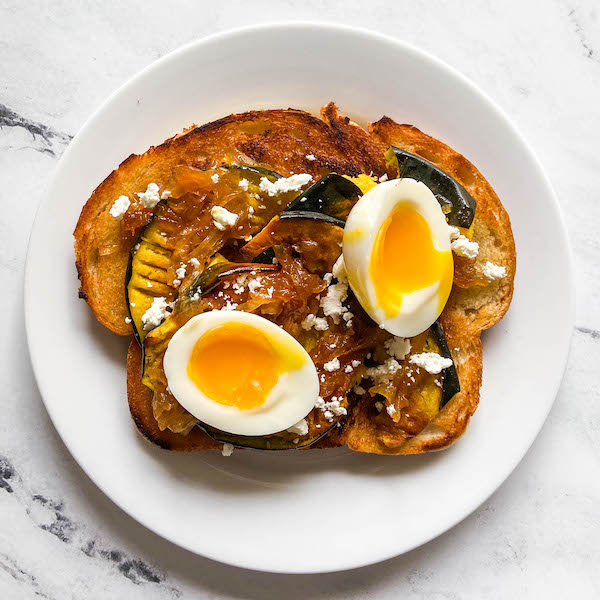

Meal Prep Fall Toast

Description
Customizable fall inspired meal prep toast featuring squash, goat cheese, onion jam, and boiled eggs.
Ingredients
- 1 acorn squash
- 2 TBSP olive oil
- 1 tsp salt
- 1/4 tsp red pepper flakes
- 1 yellow onion
- 2 TBSP maple syrup
- 2 TBSP apple cider vinegar
- 3 eggs (double if you prefer 2 per serving
- 3 slices bread of choice
- 3 TBSP goat cheese
Steps
- Preheat the oven to 425 F (220 C) and prepare a baking sheet with aluminum foil, parchment paper, or silicone.
- In a large bowl or directly on the baking sheet, toss the squash with olive oil, salt, and red pepper flakes. Roast the squash slices for 25-30 minutes until the thickest slice can be easily pierced with a fork.
- While the squash roasts, caramelize the onions. Heat olive oil over medium heat and add the onion slices and salt. Cook for about 15 minutes, stirring frequently, until soft and browned. Add the maple syrup and apple cider vinegar and cook for another 10-15 minutes until the liquid has cooked down and the onions are brown and jammy. Keep a close eye on it and stir frequently. If it starts to stick or looks like it is burning, add a splash of water and stir. Taste it to see if it needs more salt to balance the sweet and sour.
- For boiled eggs: Bring a small pot of water to a boil. Gently lower in the eggs and boil for 6.5 minutes for soft boiled, 8 minutes for hard-boiled. Put immediately in an ice bath and let sit until cool, about 10 minutes. Peel carefully. See notes for storage instructions.
- Store everything separately once cooled. When you're ready to eat, reheat the squash and onion in the microwave. To reheat boiled eggs, heat a cup of water in the microwave for 2 minutes, then add the peeled egg to the water and let it warm for several minutes. Toast your bread and assemble. Top the bread with the squash (I like to mash it a little so it all lays down evenly), some of the onions, and your desired toppings. That's it!